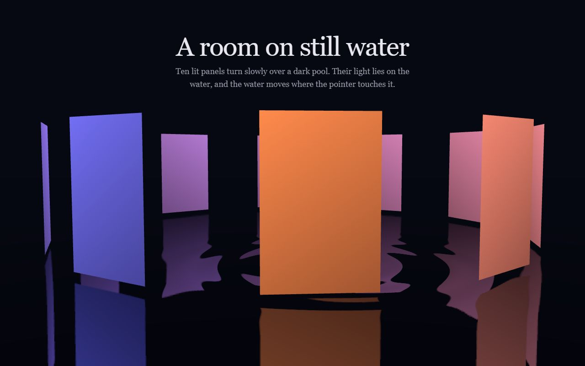

A test page for the reflective-water-floor card. The floor is a mirror drawn from a second camera below the water, bent by rings that spread from each touch.

Ten lit panels turn slowly over a dark pool. Their light lies on the water, and the water moves where the pointer touches it.
A test page for the reflective-water-floor card. The floor is a mirror drawn from a second camera below the water, bent by rings that spread from each touch.